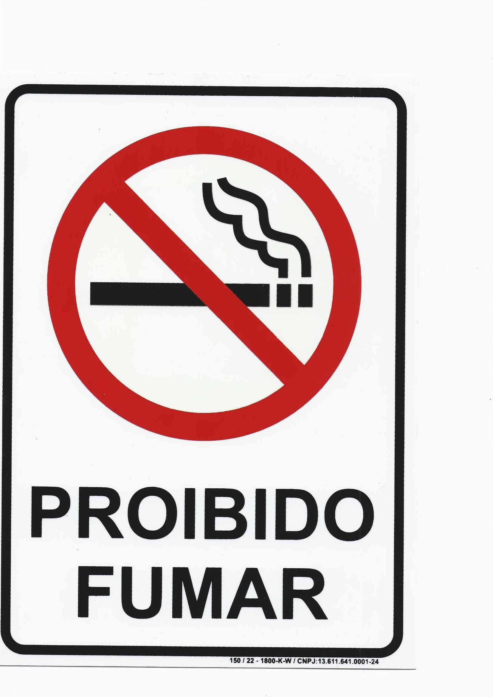
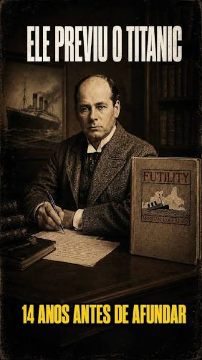
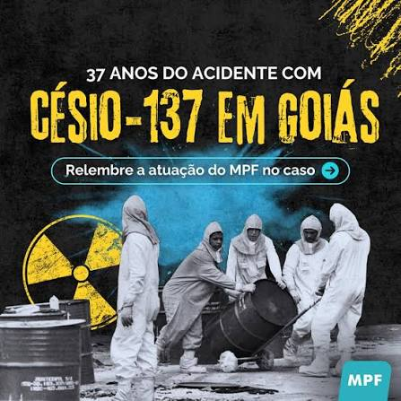

Meu primeiro post
Por:Sara Milena
Boas-vindas ao meu novo blog! Aqui vou compartilhar dicas de programação e curiosidades da área de tecnologia.
Vou compartilhar conhecimentos sobre tecnologia e programação!
Por:Sara Milena
Boas-vindas ao meu novo blog! Aqui vou compartilhar dicas de programação e curiosidades da área de tecnologia.
Por:Sara Milena
O ENIAC, criado em 1945, pesava cerca de 30 toneladas e utilizava milhares de válvulas.
Fonte: Design

Por: Sara Milena
A ave, que pertenceu ao estadista britânico Winston Churchill (1874-1965) completou 105 anos em 2019. Além de estar vivinho da Silva, consta que o papagaio continua xingando os nazistas igualzinho ao seu falecido dono.
Fonte:NASA History Division
Por: Sara Milena
fica na Ucrânia. Pripyat, que já teve quase 50 mil habitantes, hoje está completamente abandonada. Isso se deve ao medo que as pessoas têm de se arriscar pelo local onde ocorreu o mais grave acidente nuclear da história: o desastre de Chernobyl, ocorrido em 26 de abril de 1986.
Fonte:IoT Analytics

Por:Sara Milena
Em 22 de janeiro de 1908, uma mulher foi presa em flagrante em Nova York por fumar em público. Na época, a Lei Sullivan, baseada no princípio de que o cigarro era imoral, proibia mulheres de fumar em espaços públicos
Fonte:Primeiro site da Web
Por: Sara Milena
Apesar dos alertas de segurança, milhões de pessoas continuam utilizando senhas extremamente fáceis de descobrir.
Fonte:NordPass – Most Common Passwords

Por:Sara Milena
r. Em 1898, portanto 14 anos antes do famoso naufrágio, Morgan Robertson publicou um livro que narra a história do navio Titan, que afundou após colidir com um iceberg.
Fonte:NASA – Relativity and GPS

Por: Sara Milena
O maior acidente radioativo da história ocorrido fora de instalações industriais aconteceu em Goiânia, em setembro de 1987. O que provocou esse acidente foi o manuseio indevido de uma fonte radioativa de césio-137 abandonada.
Fonte: Emojipedia

Por:Sara Milena
A cidade mais fria do Brasil é São José dos Ausentes, localizada no extremo norte do Rio Grande do Sul. A temperatura mais baixa já registrada por lá foi de -11ºC, e a temperatura média costuma girar em torno dos 14ºC.
Fonte: DENSO WAVE – QR Code Official Website